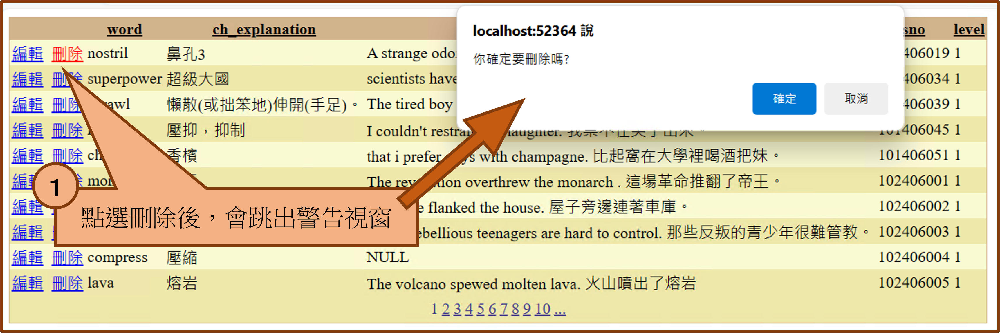

GEPT Words 單字測驗 ASP.NET 程式開發心得
作者：xxx
一、開發思路與解決方案
開發過程
不斷腦力激盪，刺激大腦神經。大膽假設 小心求證。
將題目要求透過自己曾學過的程式碼在腦中試想，以某方法是否可行，若無法則可能遇到什麼問題。
撰寫腦中所想得雛型程式碼，再透過逐步執行查證是否都是與心中所想的一樣，若不一樣在看看是什麼問題，然後一一解決。
解決策略
反覆觀看老師的影片有沒有教學，若沒有就看老師的網頁，再沒有就是問ChatGPT該怎麼做比較好，
透過 ChatGPT 給的程式碼去思考其寫法是甚麼，不懂的可以透過 Google 查閱相關資料。
理解 ChatGPT 撰寫的方式是甚麼後，修改其不必要的程序，僅留下需要程序，
再透過逐步執行查看變數的值是否是心中認為正確的值，若正確就完成，
若不正確則看其值是甚麼，為甚麼與自己預料的不同，是否缺少甚麼程序，再一一修改。
二、使用的技術與引用來源
使用的技術及其來源
- SQL 語法的ORDER BY 和 OFFSET/FETCH 子句 (U-SQL)
- HyperLink.Text 屬性
- Databind a dropdownlist
- ASP.NET Session
- SqlDataSource的參數
- 洗牌演算法
- 陣列
- DataSourceSelectArguments
三、遇到的問題與解決方法
遇到的問題
- VS無法使用資料庫
- SQL Sever無法正常啟動
- 虛擬機無法正常啟動
- SSMS 無法匯入.xlsx檔案
- 資料庫版本不相容
- 網頁視乎無法透過按鈕累加全域變數的值
- float顯示問題
解決的方法：結合 ChatGPT 和 Google查閱的相關資訊做整合。
- （問題1,2,3）使用虛擬機和查詢其他相關網站和影片教學
- （問題4）下載Microsoft Access Database Engine 2010 可轉散發套件
- （問題5）透過CMD，使用CD進入資料夾，先停止、刪除再新增mssqllocaldb
- （問題7）使用String.Format("{score:0.00});
四、修改後的程式內容
修改的部分及程式碼的說明
- 以Session["subjectNumber"] = subjectNumber儲存變數：
一開始我想使用的方式是利用 subjectNumber 作為按下一筆按鈕時會一直累加的變數，
當按下下一筆這個案鈕時，subjectNumber 就會 +1，直到 subjectNumber = 10 的時候要計算總分，
但我當時遇到的問題是他一直無法累加，一直都是1，後來查閱相關資料發現是網頁無法這樣累加存取，
因此我透過 Session["subjectNumber"] 來存取 subjectNumber 的值，就解決了問題。
- asp:GridView：
OnRowDeleted="CBF110048_GV1_RowDeleted">
這裡的程式碼是為了刪除 GridView 時，DDL 也能夠及時的更新。
我使用自創的兩個方法來解省空間，因為其他地方也需要用到BindDropDownList()和CreateHyperLink()的方法
BindDropDownList()：主要用來更新下拉式選單的資料
CreateHyperLink()：主要用來更新其單字的連結

五、程式執行畫面及畫面展示
功能介紹
這是初始畫面：
這是對表格的編輯及更新：
這是對表格刪除：


更動表格頁數：
更動下拉是選單的頁數：
點選下拉式選單的單字會出現中文及劍橋的查詢連結：
點選測驗去的按鈕：
題目的說明：
按下重完可回到初始畫面再瀏覽。
六、個人心得與反思
學習心得
撰寫程式的過程常伴隨著不斷面對新問題、搜尋相關資料解決目前這個困難的問題。
這種循環會不斷的持續進行，直至最終完成開發。
在本次開發中，我一再經歷從問題產生到解決，再發現新問題的循環中。
這樣的挑戰會不斷累積自己的挫敗感，使我感到極度疲倦。隨著疲倦度升高，我的撰寫效率也會成反比的急速下降。
而為了避免這種負面影響，我意識到心態和休息的重要性。
在面對挫敗感時，我會選擇暫時中斷工作，轉而從事其他領域的活動，
或者放鬆一下看一些影片。這樣的休息讓我能夠重整精神，下次再開始工作時更有動力。
這種正面的循環有助於問題逐漸找到解決辦法，經過一一測試後，最終完成一個符合期望的程式。
未來展望
程式撰寫的未來展望充滿挑戰與潛力。
隨著科技的快速發展，我們將見證更智能、更高效的程式開發工具的出現，如自動化程式生成和更強大的代碼分析工具。
而程式設計師將更注重協同合作和敏捷開發，以應對日益複雜的問題。
未來可能會涉及其他更多不同的領域，而程式撰寫也持續的演進，期許自己也能夠不斷的學習新技術，迎接未知的挑戰。